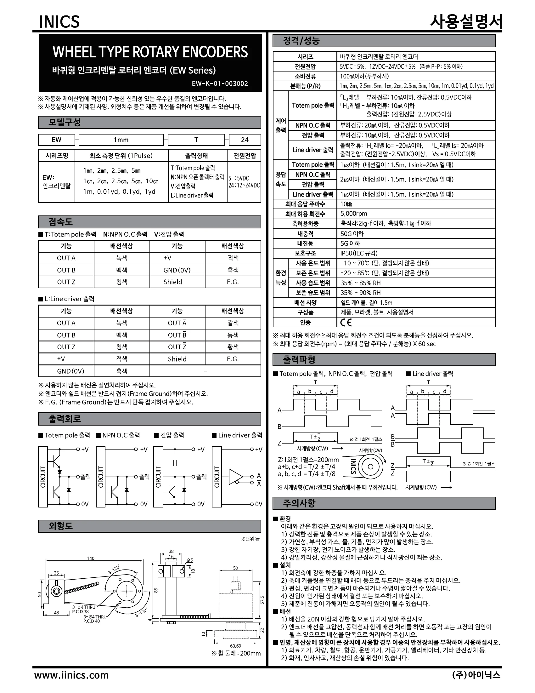
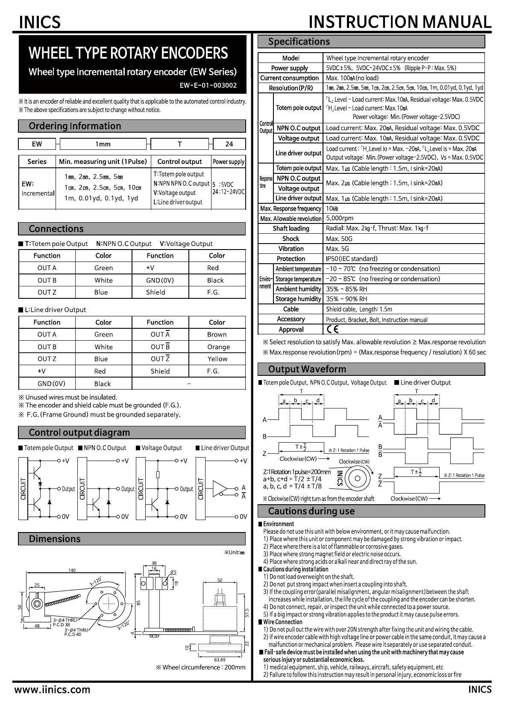

INICS · Manual
바퀴형 로터리 엔코더
Wheel Rotary Encoder | EW Series
매뉴얼 다운로드 · Manual Downloads
한국어 매뉴얼
파일이름 : ew-ko.pdf
English Manual
File name : ew-en.pdf
설명서 전체 내용을 화면에서 바로 확인하실 수 있습니다.
인쇄하거나 저장하시려면 PDF 다운로드 버튼을 이용해 주세요.
The full manual is shown on screen. Use the download button to save or print the PDF.